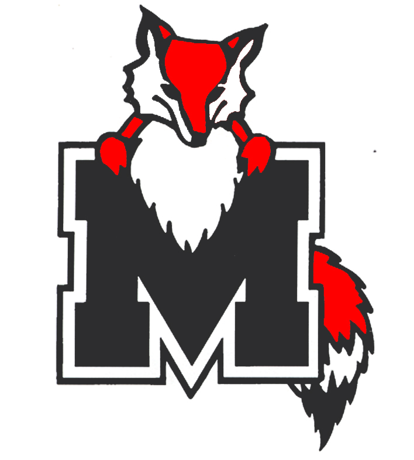
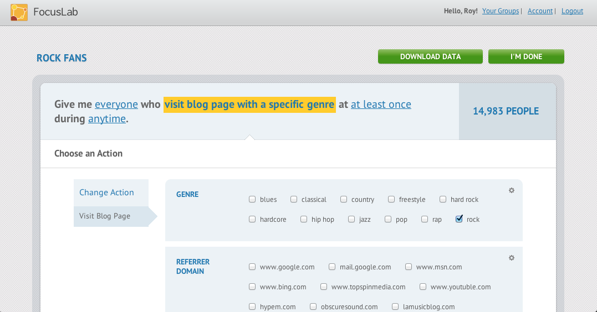
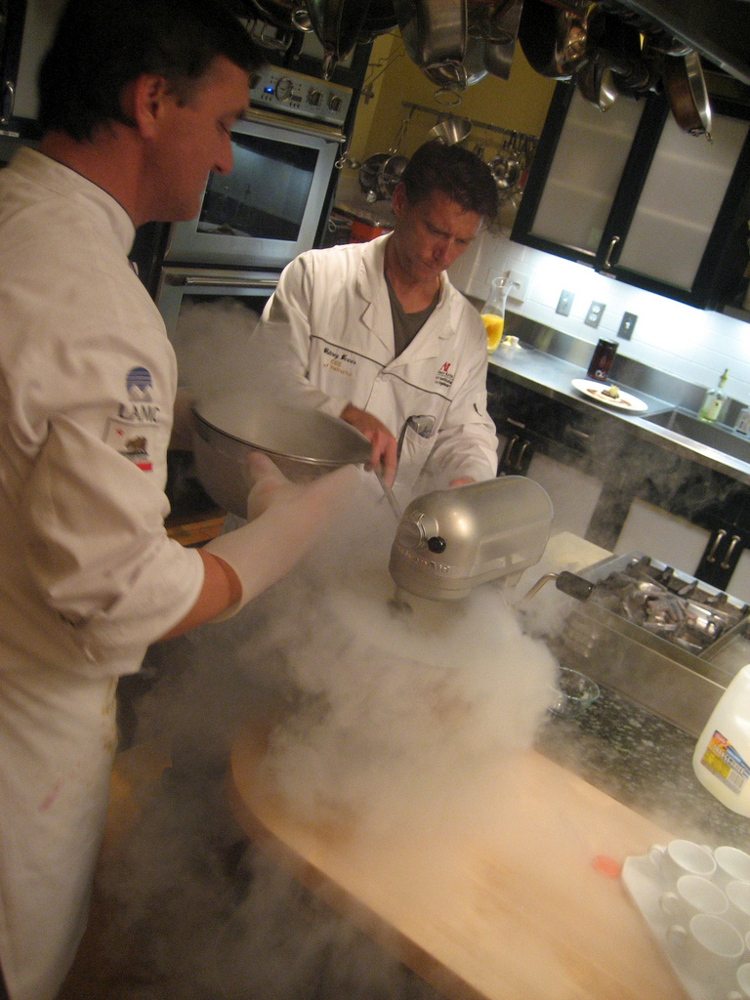
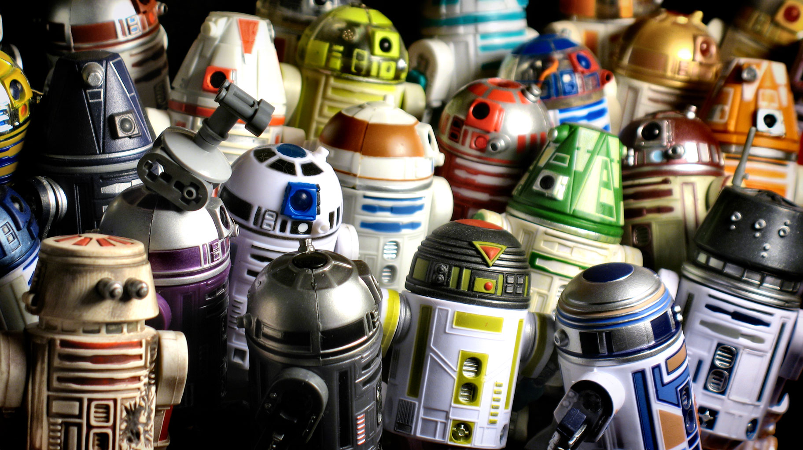

An Intro to Chef
Who's this guy?


What's the problem?
s
s s s
s s s d d
c
c
c d
d
c c
d
What's the solution?
CHEF!

http://www.flickr.com/photos/mikey_k/4620953084/

http://www.flickr.com/photos/donsolo/3768623542/
/
Go to slide:
#